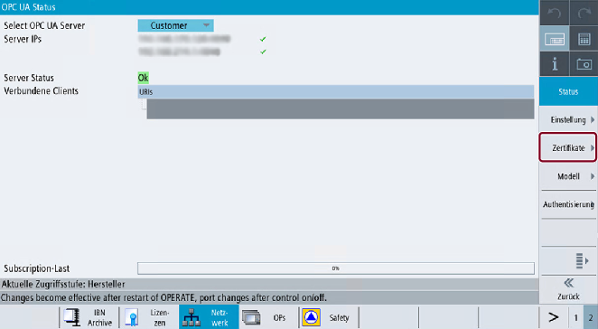

Um eine sichere Verbindung zwischen einem OPC UA Server und einem Client herzustellen, muss das Zertifikat des anderen Kommunikationspartners ausgetauscht und als vertrauenswürdig akzeptiert werden. Der Austausch erfolgt normalerweise automatisch beim ersten Verbindungsaufbau zwischen Client und Server. Dennoch gibt es die Möglichkeit, die Zertifikate manuell auszutauschen, bevor der andere Kommunikationspartner verfügbar ist, z. B. zur Vorbereitung einer einfachen Inbetriebnahme.
Um die Zertifikate als vertrauenswürdig einzustufen, gibt es auf dem Server zwei Möglichkeiten:
Neuen Zertifikaten automatisch vertrauen
Wenn die Option "Zertifikate automatisch akzeptieren" im Dialog "Inbetriebnahme" aktiviert ist, wird neuen Client-Zertifikaten automatisch vertraut und es ist kein manueller Eingriff erforderlich, um eine sichere Verbindung herzustellen.
Dies ist die komfortabelste Option, jedoch weniger sicher als das manuelle Vertrauen, da allen Zertifikaten vertraut wird.
Zertifikaten manuell vertrauen (empfohlen)
Wenn die Option "Zertifikate automatisch akzeptieren" im Dialog "Inbetriebnahme" deaktiviert ist, muss den Zertifikaten manuell vertraut werden, um eine sichere Verbindung herzustellen.
Dies ermöglicht dem Administrator des OPC UA Servers, manuell zu entscheiden, welcher Client eine sichere Verbindung mit dem OPC UA Server herstellen kann.
Um eine komfortable Methode zur Handhabung von Zertifikaten bereitzustellen, bietet der OPC UA-Dialog einen Bereich "Zertifikat", der mit dem Softkey "Zertifikate" aufgerufen werden kann.
Softkey-Zertifikate
Der Dialog "Zertifikat" ermöglicht folgende Bedienschritte:
Server-Zertifikat
Erneuerung des Server-Zertifikats
Export des aktuellen Server-Zertifikats
Client-Zertifikate
Liste der aktuell akzeptierten Zertifikate
Liste der abgewiesenen Client-Zertifikate
Manueller Import eines Client-Zertifikats
Löschen eines Client-Zertifikats
Einem abgewiesenen Client-Zertifikat vertrauen